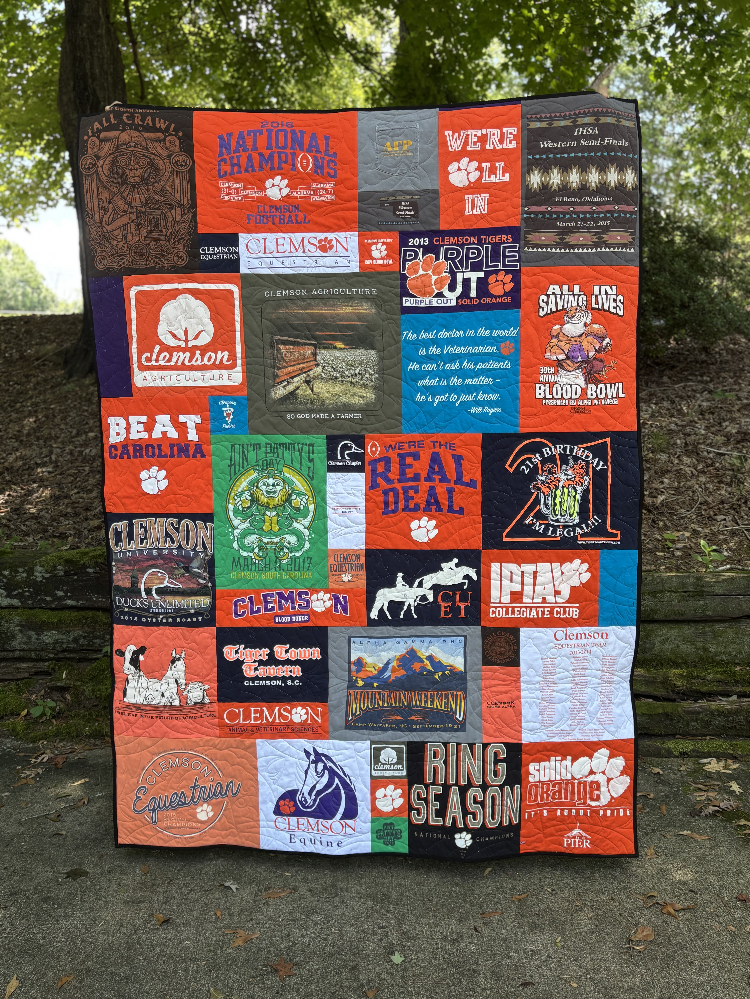

The Dease Company

I learned to sew sitting in my Maw-maw’s lap.
She was an expert seamstress who spent years working in the textile plants before making and selling shirts at local flea markets. More than 30 years later, I’m still sewing—and I’m still carrying a little bit of what she taught me into everything I make.
I’m the maker behind The Dease Company, a local handmade business in Oconee County, South Carolina. I specialize in memory quilts and keepsakes, but I love all things sewing and can make just about anything involving fabric.
I believe old things can have new lives.
My favorite projects start with something that already has meaning.
Maybe it’s a box of T-shirts sitting in a closet. Maybe it’s clothing belonging to someone who has passed away. Maybe it’s fabric that has been tucked away for years because no one could quite bear to get rid of it.
I love turning those things into something that can actually be used, enjoyed, and cherished.
I’ve been making quilts for more than seven years and memory quilts for four. My journey into memory quilting began when my preacher’s wife asked me to turn her father’s clothing into quilts. I fell in love with the idea of transforming something so personal into something her family could hold onto and use for years to come.
And that’s still my favorite part.
When you hand me a pile of clothes, I’m thinking:
I love discovering the stories hidden in the fabric—the teams, accomplishments, vacations, hobbies, favorite places, and everyday moments that made those clothes special.
For memorial projects, I know I’m being trusted with something even more precious. I treat every piece with the utmost care and respect because I understand that I’m not simply handling fabric.
I’m handling someone’s memories.
Whether I’m making a memory quilt, keepsake bear, pillow, or something completely different, my goal is the same:
Take something meaningful. Give it a new life. Create something worth keeping.
I’m a wife, a mom of two, a lifelong sewist, and a big believer that the best things don’t always need to be brand new.
Sometimes, they just need a second life.
Welcome to The Dease Company.